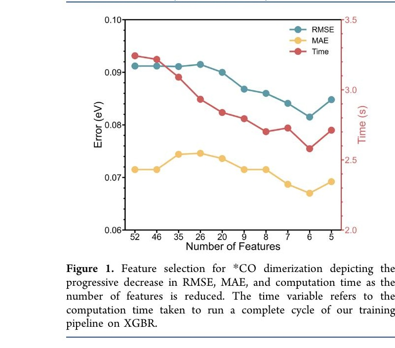
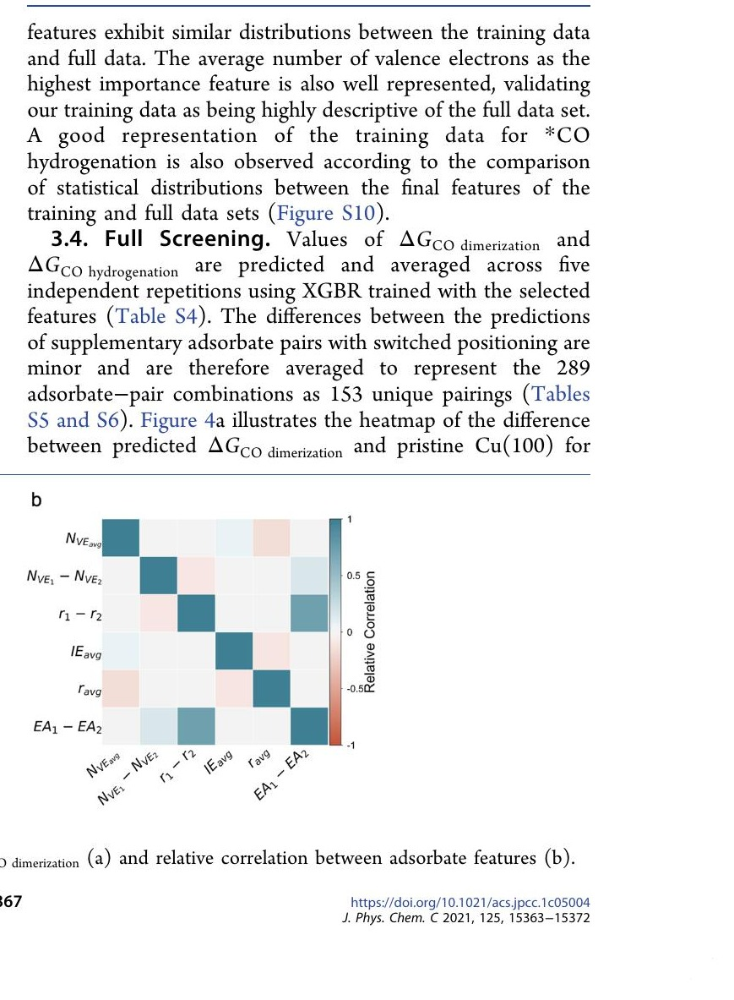
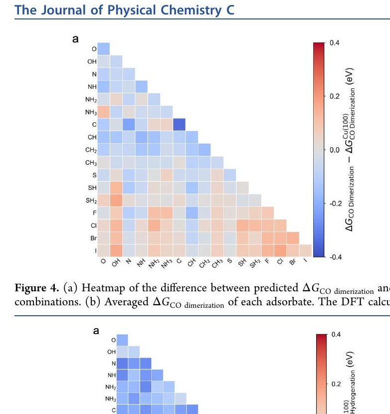

Moved from Beijing with my parents at the age of 8.
2014
First Internship — Syncrude R&D
Taught me I wasn't interested in oil & gas, but had a genuine interest in research.
2018
BASc. Chemical & Biological Engineering — UBC
Graduated and moved back to China to pursue grad school at Tsinghua University.
2019–2020
Covid Pivot
Stuck in Canada during the height of Covid, unable to return to campus. Transitioned my project from experimental to computational. Self-taught coding and ML basics from online courses.
2021
MSc. Computational Chemistry — Tsinghua University
2021–2025
Product Manager — Meituan, Healthcare Division
2026–Now
Product Manager — Microsoft, Edge Mobile
The Journey
Six Years of Building With AI
Three eras, each fundamentally different in what AI could do — and what I could build with it.
1
2018–2021
The Numbers Game
ML as a research tool — predict one number to accelerate catalyst discovery. AI as a calculator.
2
2021–2023
Teaching Machines to See
Computer vision enters consumer products — AI-powered skin analysis serving millions of users.
3
2025–Now
The Agentic Era
Ship full products without writing code — vibe coding and autonomous agents change everything.
Era One · 2018–2021
The Numbers Game
Machine Learning as a Research Tool
Graduate thesis · Tsinghua University
289 Catalysts screened
94% Model accuracy
100K× Speed increase
Era 1 · The Problem
The Science Problem
Electrochemical CO₂ reduction (CO₂RR) converts atmospheric CO₂ into fuel products
Some products are valuable fuels; others are waste
A proper catalyst acts as a "buff" — tailoring the reaction toward high-value outputs
Finding the right catalyst is the fundamental challenge
The goal: find which catalyst materials produce the most valuable fuel products from CO₂.
Traditional catalyst R&D relies on DFT simulations — each one expensive and slow.
289
Catalyst candidates to screen
~2 days
Per DFT calculation on a supercomputer
~$1,200
Per catalyst candidate in compute cost
Years
To simulate all combinations
A full screening would take years and is entirely infeasible. Need a cheap, high-throughput method for initial screening.
Era 1 · The Approach
The AI-for-Science Approach
Train a regression algorithm on catalyst data to predict DFT results directly.
289
Catalyst candidates
→
52
Physio-chemical features each
→
8
Regression models tested
→
1
Target variable (energy barrier)
Instead of running expensive simulations, we train a model to predict the simulation output from physical properties alone.
Era 1 · Model Tuning
Optimizing Through Feature Reduction

📈
Feature Count vs. Model Accuracy Optimal feature count balances signal and noise
'">
Finding the signal in the noise: More features adds noise and overfitting. Too few loses predictive power. The optimum sits in between.

🔬
Feature Importance Ranking Which physical properties predict DFT results
'">
Mapping the chemical space: The model identifies which physical properties matter most for accurate prediction.
Era 1 · The Results
Highly Accelerated & Accurate
100,000×
Speed increase vs. DFT
$150K
Saved in computation cost
94%
Accuracy vs. traditional DFT
215%
Performance vs. standard
80 potential catalyst candidates identified for experimental validation — from an initial pool of 289.

🗺️
Model Prediction Heatmap Predicted vs. actual DFT values
'">
The Takeaway
This is AI as a calculator — narrow, specialized, and nowhere near general intelligence. But it turned a years-long screening problem into an instantaneous one.
INPUT
Tabular catalyst data
→
MODEL
Regression algorithm
→
OUTPUT
One number (energy barrier)
Era Two · 2021–2023
Teaching Machines to See
Computer Vision Enters Consumer Products
Meituan · Healthcare Division
CV Computer Vision
B2C Consumer facing
Scale Millions of users
Era 2 · The Business Context
Cosmetic Medicine at Meituan
Cosmetic medicine — one of Meituan's most profitable verticals. Users had high intent but low conversion.
💰 High average transaction cost
⚕️ High perceived medical risk
🧠 High domain knowledge barrier
The core challenge: How do you get users confident enough to convert when the stakes feel high and the knowledge gap is wide?
Solution Approach
Use AI to lower the knowledge barrier — give users a free, instant skin analysis before they commit.
Era 2 · The Product
AI Skin Analysis
Three steps. No doctor required.
1
Take a Selfie
Camera captures facial image for CV analysis
2
Fill Out Questionnaire
Personal context for tailored recommendations
3
Get Your Analysis
AI-powered assessment and product matching
Era Three · 2025–Now
The Agentic Era
Personal Vibe-Coding Exercises
NLP Natural language input
Code AI-generated output
Ship Production products
Era 3 · The Shift
2025 Completely Changed the Game
Vibe coding is building software through natural-language conversation with AI — describing what you want clearly enough that the AI implements it.
What It Is
What It Isn't
✓ AI as the actual implementer, not just a copilot
✗ Hands-off magic — you still review every output
✓ Removing the "I can't code" barrier for PMs
✗ Reliable for complex architecture alone
✓ Faster prototypes, MVPs, demo-ready products
✗ A replacement for engineers at scale
✓ The bottleneck shifts to clarity of thought
✗ Free — the subscriptions add up fast
Showcase 1
Edge Mobile Reimagined
Started as an interview prompt from Mike: "Pick one everyday mobile browsing experience and propose how Edge Mobile could use AI to improve it."
Lovable
Coding agent
~30 hrs
Total build time
~$125
Total cost (USD)
edge-demo.info
Live demo
Showcase 1 · Build Process
The Iterative Build Flow
01
Build the frontend shell
"Getting started is half the battle" — building the frontend first enables flow and gives you something tangible to iterate on.
02
Refine each element
First iteration will contain many mistakes. Take your time tackling each element individually. Patience pays off.
03
Develop the new feature
By now you're in the flow. Build the core innovation on top of the solid foundation you've established.
The process is slow and iterative — but each cycle gets you closer to something real. Expect 5–10 revision cycles per feature.
Showcase 2
Khora — An E-Commerce Platform
Built an end-to-end e-commerce platform entirely using Claude Code. Context: a cousin wanted to start selling handmade bracelets in Canada.
Claude Code
Coding agent
Opus 4.6
Model
~25 hrs
Build time (90% done)
$20+
Cost (Claude Pro)
Showcase 2 · Architecture
The End-to-End Stack
Full-stack e-commerce — storefront, inventory management, checkout, and order processing.
The Honest Reality
The Real Cost of Vibe Coding
Claude Pro
$20/mo
Lovable
$20/mo
Cursor
$20/mo
Vercel
$20/mo
Domain + Misc
~$15/mo
$500+
Total spent on "light" vibe coding
The tooling cost adds up fast. Each subscription is "just $20/mo" until you're running five of them.
Lessons Learned
AI technology is evolving fast
From classification and regression → to CV models → to agentic vibe coding — all within five years.
2018
Predict a number
→
2021
Analyze an image
→
2025
Build a product
Looking Forward
What This Means for Product Managers
Continuous learning is more important than ever
AI technology is evolving fast. Keeping up is essential — not only for workflow efficiency, but to bring new experiences to customers and users.
Prototyping becomes a PM skill
You can now build a working demo before a single developer is involved. That changes how you validate and pitch ideas.
Trust but verify
AI systems — like human teams — need clear accountability structures. Assume nothing is done until it's verified.
Vibe coding is fast, but details take time
Someone has to define what agents do, set their constraints, and audit their output. That's product thinking.